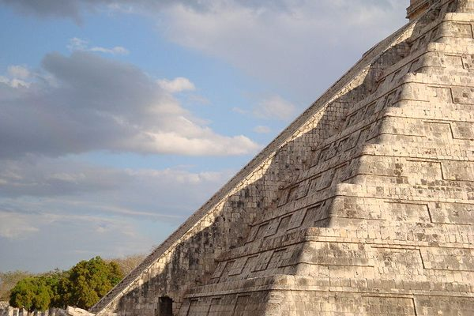
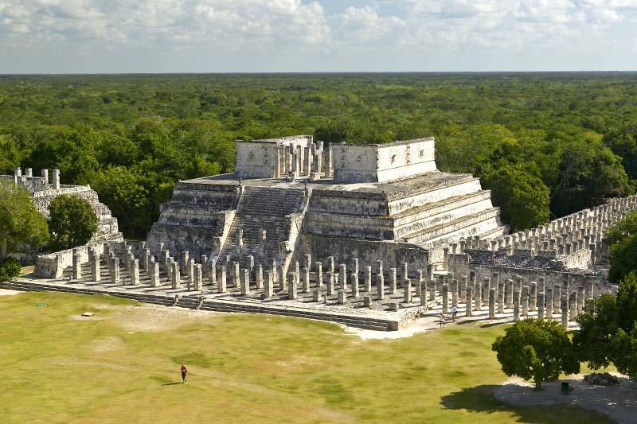

Chichen Itza is an ancient Mayan city located in the Yucatan Peninsula of Mexico. It is one of the most visited archaeological sites in Mexico and is considered one of the most important examples of Mayan architecture. The site was declared a UNESCO World Heritage Site in 1988 and was named one of the New Seven Wonders of the World in 2007.
General Information
Chichen Itza was a major religious and political center of the ancient Mayans. It was built between the 7th and 10th centuries AD, and at its height, it had a population of over 50,000 people. The site covers an area of around 4 square miles and includes many impressive architectural structures such as the Temple of Kukulkan, the Great Ball Court, and the Temple of the Warriors.
History
The history of Chichen Itza is closely tied to the history of the Mayan civilization, which flourished in the region between 250 and 900 AD. The city was a major religious and political center, and it reached its height during the Terminal Classic period (800-900 AD). The city was eventually abandoned, and the site was rediscovered in the 19th century.

Build
Chichen Itza was built using a combination of stone and plaster. The structures were constructed using a technique called corbelling, which involved laying each successive layer of stone slightly inward to create a step-like structure. Many structures at Chichen Itza also feature complex carvings and sculptures. The most notable structure at Chichen Itza is the Temple of Kukulkan, a step pyramid that is over 30 meters tall.

Fun facts
Chichen Itza was a major religious and political center of the Mayan civilization.
The Temple of Kukulkan, also known as El Castillo, is the most iconic structure at the site.
During the spring and autumn equinox, the sun creates the illusion of a serpent descending the steps of the Temple of Kukulkan.
The Great Ball Court is the largest ball court in Mesoamerica and it is where the Mesoamerican ballgame was played.
Chichen Itza was named one of the New Seven Wonders of the World in 2007.